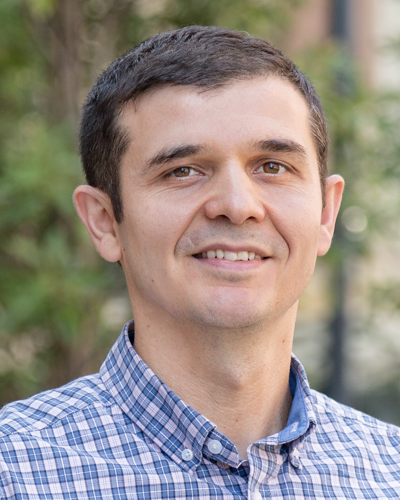
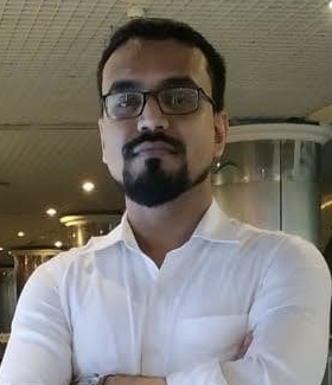
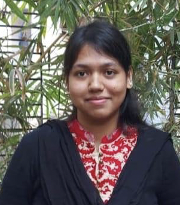
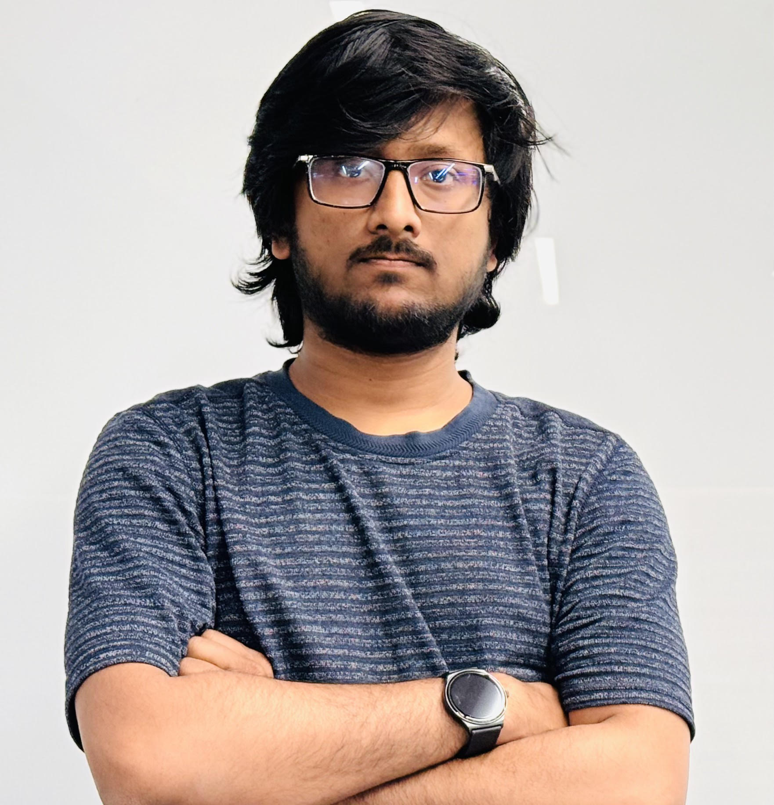
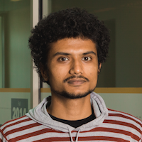
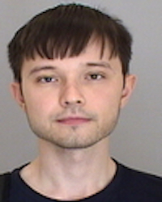
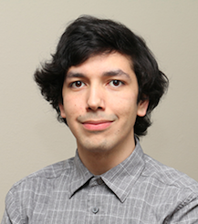
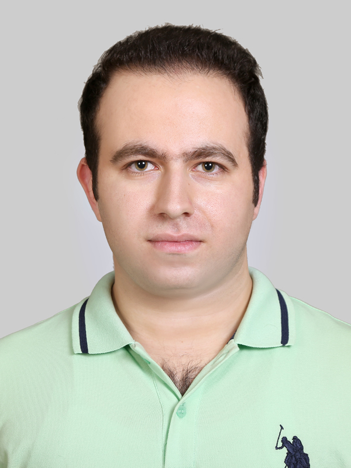

|

|
Bio
Eyuphan Bulut is an Associate Professor at Computer Science Department of Virginia Commonwealth University (VCU). Before he joined VCU, he was working for Cisco Systems as a senior engineer in Mobile Internet Technology Group (MITG). He received his Ph.D. degree in computer science department of Rensselaer
Polytechnic Institute (RPI) in 2011. Dr. Bulut and his team is the recipient of several awards including VCU Presidential Quest Fund, IEEE International Conference on Pervasive Computing and Communications (PerCom 2020) best demo award, and Air Force Research Lab (AFRL) Summer Faculty Fellowship. Dr. Bulut is on the Editorial Board of Elsevier Ad Hoc Networks and IEEE Access. CV.
Contact
Office: Engineering East Hall, Room 4254
Email: ebulut [at] vcu [dot] edu
Phone: (+1)-804-828-6382
|
Graduate Students

|
Md Touhiduzzaman
Touhid completed his B.S. in Computer Science and Engineering (CSE) from Bangladesh University of Engineering and Technology (BUET) in 2016. He then continued to build up his startup on education technology, which is now expanded to telecom and health-tech sectors. He joined MoWiNG lab in Fall 2021 to pursue his Ph.D. ambition on network security and user privacy concerns, which may also benefit his entrepreneurial & industrial software engineering career.
|

|
Soumita Ghosh
Soumita completed her B.Sc in Computer Science and Engineering from Bangladesh University of Engineering & Technology in 2019. Then she served at Dynamic Solution Innovators, a renowned software company of Dhaka as a software engineer for about 3 years. She joined MoWing lab in Fall 2022 as a PhD student.
|

|
Nafeez Fahad
Nafeez received his B.Sc. degree in Computer Science and Engineering from Chittagong University of Engineering and Technology (CUET) located in Bangladesh in 2022. He then joined the MoWing lab in the Spring of 2024 to pursue his PhD. His research interest revolves around the trending topics of wireless sensing, mobile networks and machine learning.
|
Alumni
Ph.D. Graduates:

|
Aashish Dhungana
Dissertation: "Leveraging Peer-to-Peer Energy Sharing for Resource Optimization in Mobile Social Networks" [pdf].
Position: System Engineer, Align Technologies, NC.
|

|
Fatih Yucel
Dissertation: "Preference-Aware Task Assignment in Mobile Crowdsensing" [pdf].
Position: Software Engineer, Bloomberg.
|

|
Steven M. Hernandez
Dissertation: "WiFi Sensing at the Edge Towards Scalable On-Device Scalable Wireless Sensing Systems" [pdf].
Position: Google Research.
|

|
Amirahmed Chapnevis
Dissertation: "Efficient Connectivity Management and Path Planning for IoT and UAV Networks" [pdf].
Position: Software Engineer, Dilliards.
|
Undergraduate Researchers:
REU Summer 2023: Maya McDonough (VCU), Thomas Moomaw (UNCC), Jack Farley (Duke), Brandon Vilela (Santa Monica College), Kshitij Kokkera (VCU)
REU Summer 2022: Rachel Williams (UNCC), Joshua Foster (UNCC)
Fatma Saafan
Dimayri Romero
Deniz Erdag (now with Capital One)
Fidel Rodriguez (now with CarMax)
Rohan Ray (now with IBM)
Dongchen (Jay) Guan (first position after graduation Microsoft. Moved to Apple)
Steven Hernandez (finished PhD in MoWiNG lab - GRFP recipient. Now with Google Research)
Senior Design Projects
2018-2019: Remote Patient Monitoring (Kevin Hall, James Peaker, Mit Amin)
2017-2018: Campus Bluetooth Tag Network (Nicholas Bennett, Jordan Mays-Rowland, Justin Yirka)
Sternheimer Award Winner
2016-2017: Automatic Parking Application (Will Steiner, Corey Gates, Huy Nguyen)
|
|